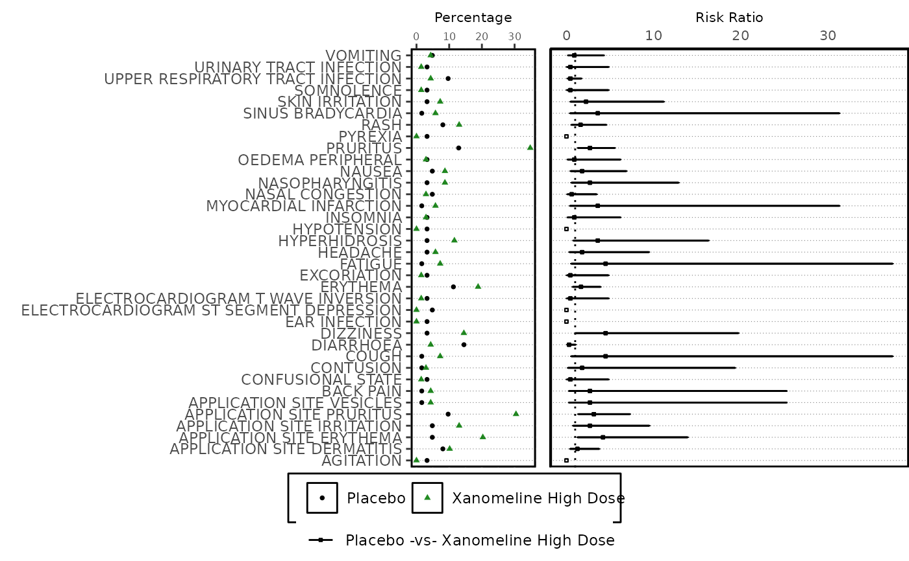

Display combined Forest Plot
Arguments
- plot_list
Named list of ggplot objects to be combined. Must contain the names "splot" (scatter plot), "fplot" (risk/forest plot) and optionally may include "ptable" (p-values/other statistic) and/or "termtable" (terms/categories)
- rel_widths
Relative widths of each subplot - applied to both static and interactive plot
- interactive
Return interactive subplot object? Alternatively, grid plot returned. Values: "Y"/"N"
- plot_height
Height of plotly output, if specifically required
- xpos
Where should X xaxis for
splotandfplotbe displayed in interactive plot? Values: "top"/"bottom". Value for static output is decided prior to passing in this function.- legend_opts
Legend styling option, a
listcontainingpos(position) anddir(direction).
Examples
data("adae")
ae_pre_process <- ae_pre_processor(
datain = adae,
obs_residual = 0
)
ae_entry <- mentry(
datain = ae_pre_process$data,
byvar = "AEBODSYS",
trtvar = "TRTA",
trtsort = "TRTAN",
pop_fil = "SAFFL"
)
ae_risk <- risk_stat(
datain = ae_entry,
a_subset = ae_pre_process$a_subset,
summary_by = "Patients",
eventvar = "AEDECOD",
ctrlgrp = "Placebo",
trtgrp = "Xanomeline High Dose",
statistics = "Risk Ratio",
alpha = 0.05,
cutoff_where = "PCT > 2",
hoveryn = "Y"
) |>
dplyr::mutate(key = dplyr::row_number())
#> mcatstat success
splot <- forest_plot_scatter(
datain = ae_risk,
xvar = "PCT",
yvar = "DPTVAL",
series_var = "TRTVAR",
series_opts = list(
color = g_seriescol(ae_risk, c("black", "forestgreen"), "TRTVAR"),
shape = g_seriessym(ae_risk, NA, "TRTVAR"),
size = rep(1, 2)
),
hovervar = "HOVER_TEXT",
xaxis_pos = "top",
legend_opts = list(pos = "bottom", dir = "horizontal"),
axis_opts = list(xsize = 8, xtsize = 6, xaxis_label = "Percentage")
)
fplot <- forest_plot_base(
ae_risk,
xvar = "RISK",
yvar = "DPTVAL",
xminvar = "RISKCIL",
xmaxvar = "RISKCIU",
hovervar = "HOVER_TEXT",
series_var = "TRTPAIR",
xrefline = 1,
axis_opts = plot_axis_opts(
xaxis_label = "Risk Ratio",
xopts = list(labelsize = 8)
)
)
#> Warning: Ignoring unknown parameters: `linewidth`
forest_display(list(splot = splot, fplot = fplot),
rel_widths = c(0.6, 0.4)
)
#> Warning: Removed 10 rows containing missing values or values outside the scale range
#> (`geom_errorbarh()`).
#> Warning: Removed 10 rows containing missing values or values outside the scale range
#> (`geom_errorbarh()`).

forest_display(list(splot = splot, fplot = fplot),
rel_widths = c(0.6, 0.4),
interactive = "Y"
)